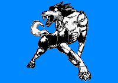

哮風之狼/Howlin' Wolf
A+4800
能力等級：
破壞力A 速度B 射程B 持續力D 精密動作性B 成長性C
能力定位：中距離力量型
能力評定：狼型替身。能通過遠吠放出沖擊波。
既然是狼型，自然也能進行啃咬和抓撓的攻擊。
力量和瞬間爆發力很強，瞬間破壞力相當可觀的替身。
整體來說是平衡性較好的種類。
替身擁有自我意識，至少能自主進食。同時它的性格非常敏感纖細，被說是犬型時還會垂頭喪氣，對氣味并不是很敏感。
雖然被叫做狼型替身，卻并不是狼。
替身擁有自我行動的能力，在脫離替身使者獨立行動時，可以根據最后的命令和自我判斷來進行下一步行動。替身使者與替身之間不存在感官共享和心靈溝通等能力（除非有其他資源支持）。
放出替身是一個迅捷動作，收回替身也是一個迅捷動作。替身擁有自己的動作，命令替身行動不會消耗替身使者的動作。對替身造成的傷害和負面效果也不會傳遞到替身使者身上。
替身的數據如下：
體積：5
智力：5 感知：16 決心：16
力量：21 敏捷：16 耐力：21
風度：2 操縱：2 沉著：5
武技14-牙14
求生14-強韌11
專注11-意志11
運動11-反射11
洞察11-偵查11
隱秘11-潛行11
生命值：35
速度：100
先攻：25
敏感范圍：400米
觸及范圍：60米
天生武器傷害：10L（8加骰，神兵）
意志豁免：40DP+6
反射豁免：40DP+6
強韌豁免：48DP+8
偵查檢定：38DP+6
潛行檢定：38DP+6
基礎防御：16+3附加
替身被視為靈體，替身使者擁有靈感視覺和正常影響靈體和虛體的能力。
替身初始附帶【瞪視】【沖撞】【旋風】【抓撓】四個技能
【瞪視】：
通過瞪過別人以施加壓力。
標準動作對觸及范圍內的一個目標進行一次意志檢定，目標以意志豁免，失敗則這一輪內不能進行移動，這是C級影響心靈的限制行動效果。
【沖撞】：
替身使用身體沖撞別人。
標準動作對觸及范圍內的一個目標進行一次肉搏攻擊檢定，并將目標擊退等同于傷害值米。
【旋風】：
替身操縱風的力量攻擊敵人。
標準動作對觸及范圍內的一個目標進行一次肉搏攻擊檢定，造成力場嚴重傷害。
【噬咬】：
替身抓撓敵人。
標準動作對觸及范圍內的一個目標進行一次力量+武技：牙攻擊檢定，造成物理穿刺傷害。
【騎乘】：
替身使者可以乘坐替身移動。
上狼還是下狼都需要一個移動動作。
能力開發：
【龍卷】：C+1000
替身制造出小型龍卷風攻擊單數敵人。
標準動作對觸及范圍內的一個目標進行一次力量+武技+肉搏相關專業攻擊檢定，造成力場嚴重傷害。被命中的目標會被向上擊飛25米距離，這輪結束后開始墜落。
另一種運用方式：【龍卷群】
制造出大型龍卷風攻擊復數敵人。
將攻擊目標擴大為觸及范圍內的所有敵人。
【風神】：B+2000
替身利用風的力量打擊敵人。
標準動作對觸及范圍內的一個目標進行一次力量+武技+肉搏相關專業攻擊檢定，造成力場嚴重傷害。
被命中的目標會陷入B級環境來源的定身狀態和B級創傷來源的力竭狀態，持續一輪。
同時向上被向上擊飛50米，這輪結束后開始墜落。
【犬砂嵐】：A+4000
替身利用風的力量打擊敵人。
標準動作對觸及范圍內的所有目標進行一次力量+武技：肉搏相關專業攻擊檢定，造成力場嚴重傷害。
被命中的目標會被向上擊飛180米，這輪結束后開始墜落。
同時受到傷害的目標會承受等同于傷害值的流血異常點數，正常豁免。
被命中的目標會陷入A級環境來源的定身狀態一輪。
這次攻擊無視目標的閃避防御，這是A級環境來源的效果。